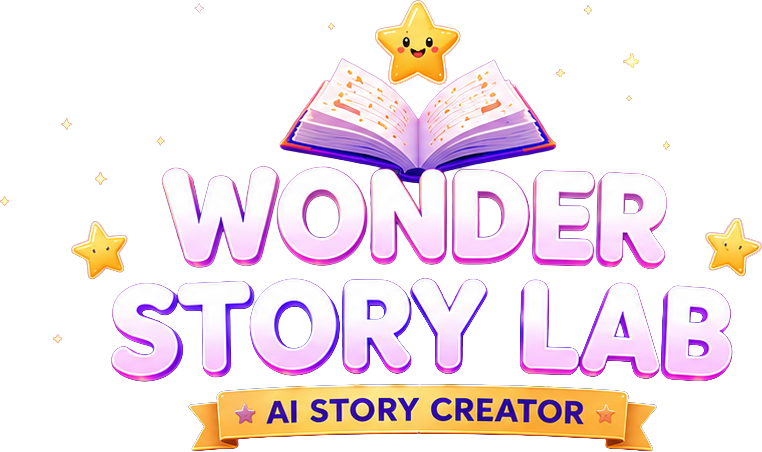
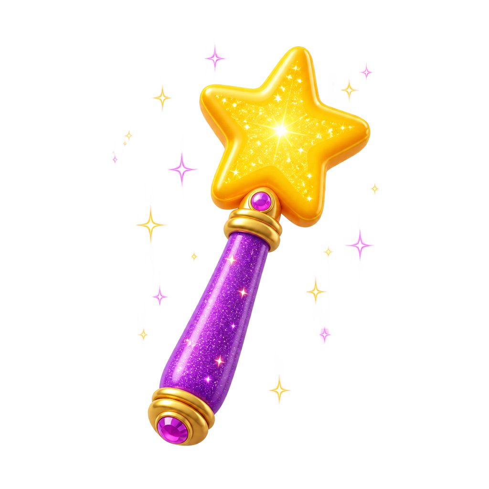

Wonder Story Lab
Class 1 · Image Maker
AI Powered Creativity


Image Maker
Create AI images
to start your story.
Story Builder
Sequence your scenes
and build your story.
Start Creating
Students
Student results
Student
My Story